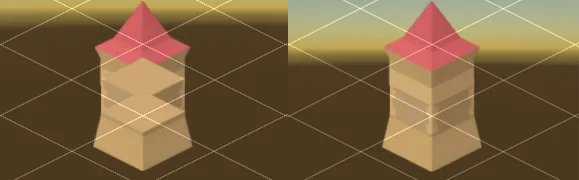
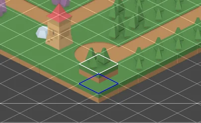
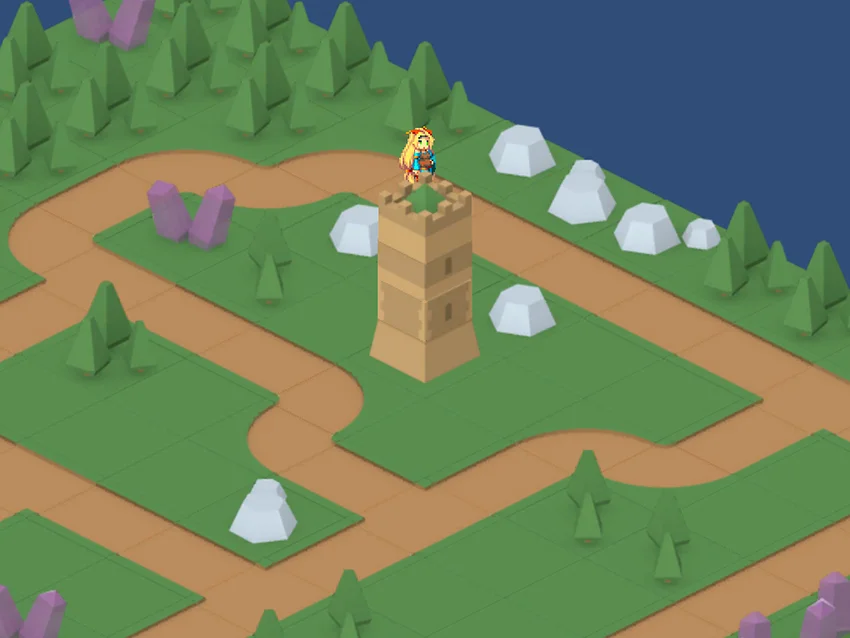

To create 3D height on an isometric tilemap, use either of the following methods:
Note: If you set the Mode of a tilemap to Chunk, tiles from multiple textures can sort incorrectly. To avoid this, pack all your tile sprites into a single sprite atlas. For more information, refer to sprite atlases.
To add a new tilemap at a higher level of 3D height, follow these steps:
In an Isometric Z as Y tilemap, each tile has a z value that represents its 3D height. Unity adds the z value to the 2D y position of the sprite, to position it higher up in the scene.
Follow these steps:
Select the grid GameObject in the Hierarchy window, then in the Inspector window set Cell Layout to Isometric Z as Y.
In the 2D renderer asset, set the Transparency Sort Mode to Custom Axis.
Set the z value of Transparency Sort Axis to the z-axis sort value.
To calculate the z-axis sort value, take the y value of the Cell Size of the grid GameObject, multiply it by negative 0.5, then subtract 0.01. For example, if the y value of the grid is 0.5, the z-axis sort value is 0.5 × –0.5 - 0.01 = –0.26.
If you don’t set the z-axis sort value, tiles at higher 3D heights can render in front of tiles at lower 3D heights.

In the Tile Palette window, disable Lock Z Position.
Set Scene View Z Position to the 3D height you want to paint at. For example, set Scene View Z Position to 1 to paint tiles one unit above the ground.
You can also press - and + to increase and decrease the 3D height of the tile while you paint.
The Scene view displays a white outline of the tile at ground level, and a blue outline of the tile at the 3D height.

To change whether the mouse pointer selects a tile in the blue outline or the white outline, use the Mouse Grid Position At Z property in the Tile Palette tab reference for the Preferences window.
To remove a tile with the Erase tool, set Scene View Z Position to the same 3D height value as the tile you want to remove.
To adjust the gap between 3D height layers, select the grid GameObject and adjust the z value of the Cell Size property.
By default, tilemaps render in Chunk mode, which means that Unity renders multiple tiles together in single batches. This approach increases performance and ensures tiles sort correctly, but other objects in the scenes can’t appear between tiles at different depths.
To avoid this, follow these steps to set tilemaps to render in Individual mode:
Unity now sorts tiles and sprites together, so characters and other objects can appear between tiles at different depths. Individual mode can reduce performance, because Unity renders each sprite individually on the tilemap.
